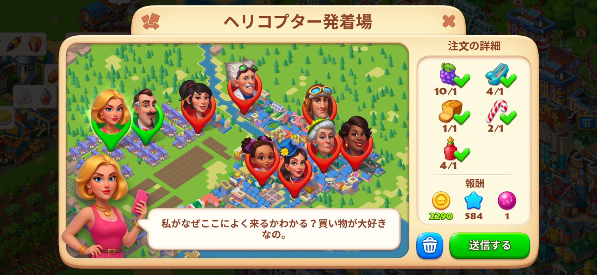
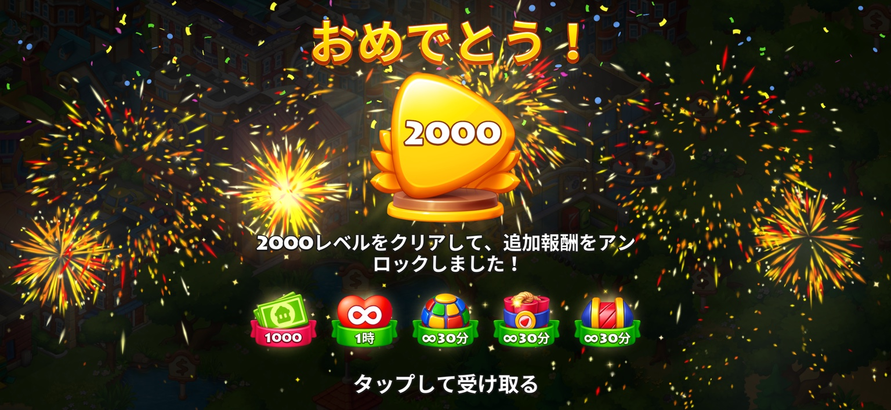

Township Lv60〜Lv70 ポイ活攻略
Lv60までの基礎攻略から、Lv70を実際に約49日で達成した実プレイまでを解説します。結論からいうと、レベル上げの主役はヘリコプター注文です。
プレイ開始は7月24日ごろ、Lv70到達は9月11日。60日期限を約11日残してクリアしました。案件条件・報酬は開始時期やポイントサイトで変わるため、挑戦前に必ず自分の案件画面を確認してください。

実プレイ結果：期限を約11日残してLv70到達
プレイ開始は7月24日ごろ。Lv60到達が8月31日、Lv70到達が9月11日でした。60日期限に対して、約49日でクリアしています。
今回のStepUp案件条件
今回挑戦した案件は、インストール日から起算して60日以内に各レベルへ到達するStepUp型でした。Lv5、11、20、35、45、51、60、70に段階報酬が設定され、初回課金にもポイントが付く条件でした。

Lv60までの基礎攻略：まず土台を作る
Lv60までは「街をきれいに作る」よりも、経験値が入る行動を止めず、ヘリ注文を回せる在庫基盤を作ることが重要です。
毎日コツコツできなくても大丈夫
実プレイでは、パズル以外を毎日きっちり長時間プレイしたわけではありません。時間がある日に在庫と市場を整え、ヘリをまとめて処理する形でも進みました。
パスの納屋+30%や市場×2を使えるので、まとめプレイと相性が良い。
Tキャッシュやイベント報酬を貯めるため、日々のログイン・交換を活用するほど有利。
Lv60までの進捗目安
公開されている別プレイヤーの進捗例として、1日目Lv11、10日目Lv22、23日目Lv35などを確認しています。これらは同一人物の成長曲線ではないため、平均日数としては扱っていません。
| 経過日数 | 到達Lv | 扱い |
|---|---|---|
| 1日目 | Lv11 | 公開進捗例 |
| 10日目 | Lv22 | 別プレイヤーの例 |
| 23日目 | Lv35 | 無課金の公開例 |
| 今回の実プレイ | Lv60 | 8月31日に到達 |
進捗はプレイ時間、課金、イベント、工場の開放状況で大きく変わります。Lv60到達時点で残日数を見てLv70へ進むか判断するのがおすすめです。
Lv70までのレベル上げはヘリコプターが中心
後半でペースが一気に上がった最大の理由がヘリコプター注文の大量処理です。注文に必要な商品がそろっていれば、短時間で何件も処理して経験値とコインを同時に稼げます。

工場、列車、飛行機は「レベル上げの主役」というより、ヘリ注文を長く回し続けるためのインフラとして考えると分かりやすいです。
納屋・市場・工場はヘリ周回のエンジン
納屋
在庫が詰まると生産も注文も止まります。納屋拡張アイテムは優先的に集め、建材を抱えすぎて容量を圧迫しないようにします。
市場
ヘリ注文で不足した品を即座に補えるため、まとめプレイでは特に重要です。市場の箱や商人を使える状態にすると待ち時間を減らせます。
工場
よく使う品の生産枠を確保し、寝る前や離席前に時間の長い品を仕込むと効率が良いです。
列車・飛行機はレベル上げの補助役
列車と飛行機は、納屋や街の拡張に必要なアイテムを集めるために使います。
ポイ活の目的はレベル到達なので、列車や飛行機を完璧にこなすためにヘリが止まるならヘリを優先します。
研究所は「活気ある市場」＋「気前のいい顧客」
ヘリコプターを本気で回す日は、研究所で次の2つを有効にしました。
- 活気ある市場：市場の商品入れ替わり頻度を上げる
- 気前のいい顧客：注文でもらえるコインを増やす
ヘリで稼いだコインを桜の木に変えてEXPを二重取り
今回の追い込みで使ったのが桜の木です。実プレイ画面では1本9,000コイン、設置時に990EXPを獲得できました。
※装飾品の価格・獲得EXPはゲーム更新で変わる可能性があります。ここでは2026年9月の実プレイ情報です。
パスを1回だけ買うなら後半がおすすめ
今回の課金は800円のパスを2回、合計1,600円でした。特に重要だったのは、納屋の広さ+30%と市場の商品×2です。
パス期間は21日。60日の案件で1回しか買わないなら、序盤より後半の追い込みに合わせる方が使いやすいです。
パズル2592までやったけど、Lv70目的ならやりすぎ
私はパズルを最終的に2592まで進めました。2000クリア時には追加報酬もありますが、Lv70案件を終わらせるだけなら、ここまで進める必要はなかったと感じています。

無課金でも狙える可能性がある理由：カードコレクション
今回の私は課金ありですが、無課金でも頑張ればLv70を狙える可能性はあると感じました。その理由の1つがカードコレクションです。
150枚のカードを集めると、1回目は10,000 Tキャッシュ。クリア後はまた0から再挑戦でき、今回のイベントでは2回目以降の完了報酬として15,000 Tキャッシュを確認しました。


カードはフレンドやチームメイトと交換できます。1日3枚送れるため、不足カードを交換してもらえる環境があればイベント期間中に複数回の完成を狙いやすくなります。
StepUpのポイント反映は、各到達画面を保存しておく
最近、SNSではTownshipのStepUp案件について「早いペースで条件を達成した際に、一部ステップが正常に反映されなかった」という利用者報告が見られます。
念のため、Lv5・11・20・35・45・51・60・70など各Step到達時は、レベルが分かるスクリーンショットを残し、ポイント側の反映も確認してから次へ進むのがおすすめです。
おすすめの回し方
まとめ：Lv60とLv70は同じ攻略線上にある
Lv60まではヘリを止めない土台を作り、Lv60以降は市場・ブースト・課金などを使って同じ周回をさらに加速するイメージです。
- レベル上げの主役はヘリコプター注文
- 工場・列車・飛行機はヘリ周回を支える土台づくり
- 研究所は「活気ある市場」＋「気前のいい顧客」が好相性
- ヘリで得たコインを桜の木へ回してEXPを追加
- 課金するならパスの納屋+30%・市場×2が後半で強い
- パズル2592はやりすぎ。Lv70目的なら優先しすぎなくていい
- 無課金はカード交換など毎日のイベント活用が重要
- Step到達画面は念のため保存しておく